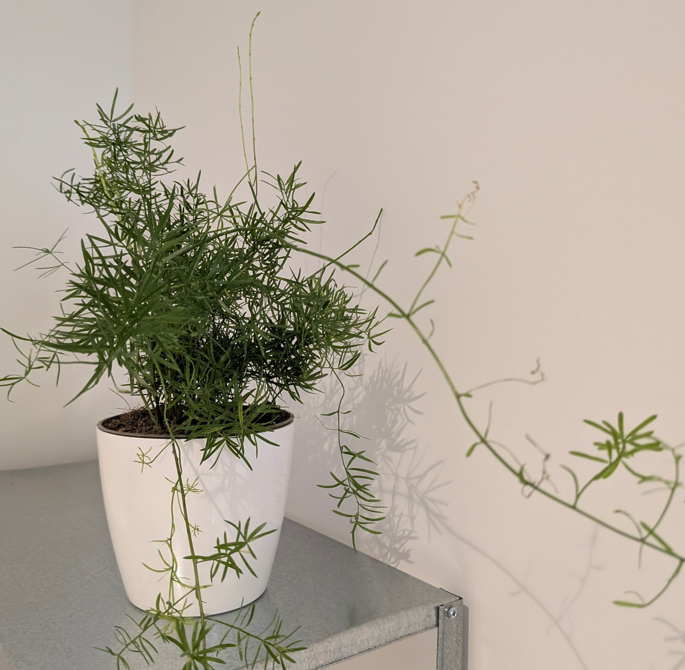

Asparagus Fern (Asparagus setaceus)

Description
Despite its common name, the Asparagus Fern is not a true fern but belongs to the Asparagaceae family. *Asparagus setaceus* is admired for its extremely fine, feathery, bright green foliage (technically cladodes, which are modified stems that look like leaves) arranged on wiry, climbing stems. It creates an airy, delicate, almost cloud-like appearance, making it popular in floral arrangements and as a houseplant.
Care Instructions
- Light: Prefers bright, indirect light. Avoid direct sunlight, which can scorch the delicate foliage. Can tolerate lower light but may become less full.
- Water: Keep the soil consistently moist during the growing season (spring/summer), but do not let it sit in water. Water when the top layer of soil starts to feel slightly dry. Reduce watering in the fall and winter. Good drainage is important.
- Soil: Use a rich, well-draining potting mix.
- Temperature: Prefers average room temperatures between 15-24°C (60-75°F). Avoid placing it near drafts or heating/cooling vents.
- Humidity: Thrives in high humidity. Mist the plant regularly, place it on a pebble tray with water, or use a humidifier, especially in dry indoor environments. Brown or yellowing foliage can indicate low humidity.
- Fertilizer: Feed with a balanced liquid fertilizer diluted to half-strength every 2-4 weeks during the growing season. Reduce feeding in fall and winter.
- Pruning: Prune yellowed or dead fronds. Can be trimmed back to maintain shape or encourage bushier growth. Note that it has small thorns on the stems.
Fun Facts
- Common Names: Common Asparagus Fern, Lace Fern, Climbing Asparagus, Ferny Asparagus.
- Not a Fern: It reproduces via flowers and seeds, unlike true ferns which reproduce via spores.
- Origin: Native to Southern Africa.
- Floristry Staple: Widely used as greenery in floral bouquets and arrangements due to its delicate texture and long vase life.
- Thorns: Be mindful of the small, sharp thorns along its stems when handling.
Toxicity
Caution: The berries produced by Asparagus Fern are toxic to humans, cats, and dogs if ingested, causing gastrointestinal upset (vomiting, diarrhea). Handling the plant may also cause mild skin irritation in sensitive individuals due to the sap and thorns.